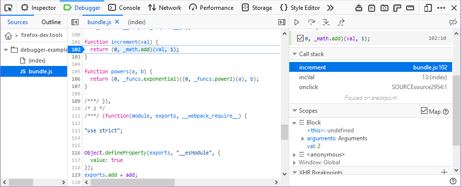
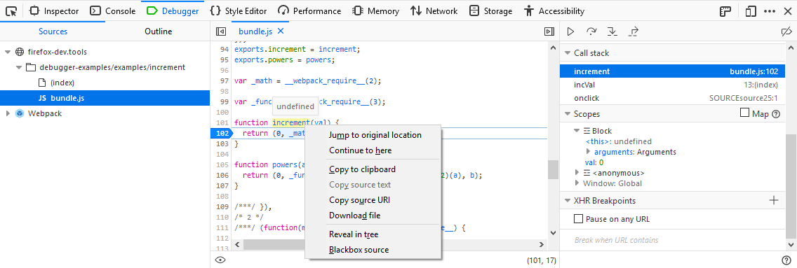

increment function.


{{ToolsSidebar}}
This feature is useful when debugging source-mapped code. It enables you to see the variables from the original source. It’s also possible to inspect variables from the generated scopes (e.g., a bundle file with all concatenated module files).
Let's take a look at how this works. If you want to follow along, use this example.
increment function.Using this feature is expensive in terms of resources, but it certainly makes your life easier when you have to debug source code that has been packaged webpack or a similar tool.